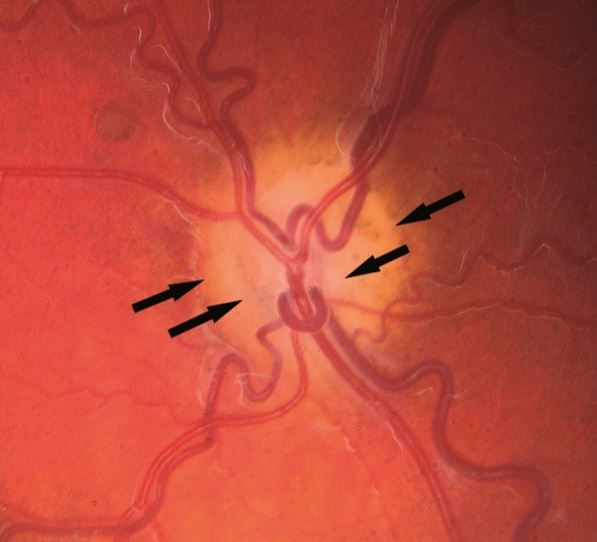
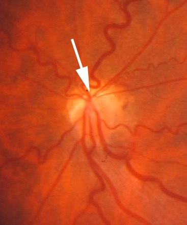
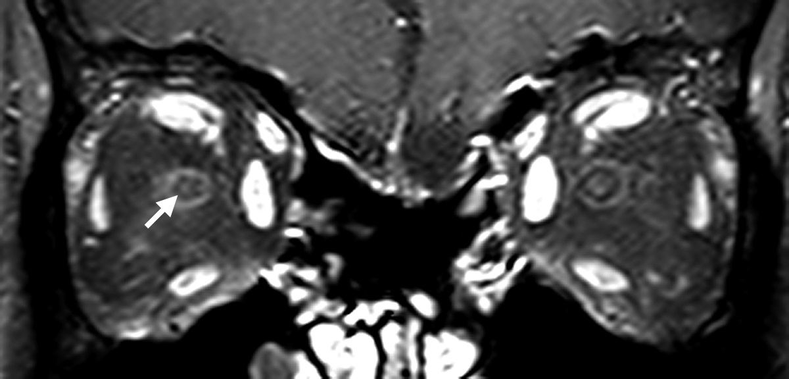
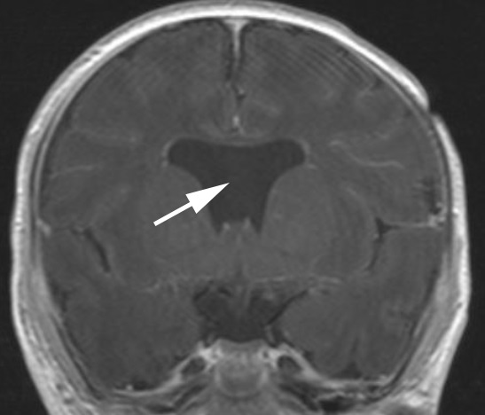
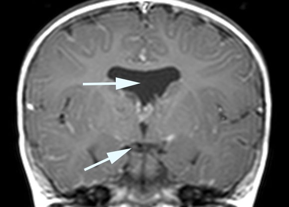
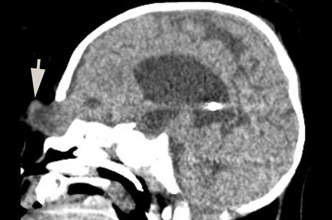
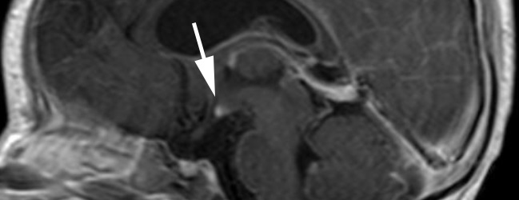

Trap:
may be diagnostically challenging because it is hard to get a good ophthalmoscopic view in infants and hard to distinguish the true margin of the optic disc

Inner pigment ring surrounding the margin of the optic disc and an outer pigment ring surrounding peripheral chorioretinal atrophy (“double ring sign”)

Variant called “superior segmental optic disc hypoplasia” lacks superior optic disc structure (“topless optic discs”) and has inferior nerve fiber bundle visual field defects but no brain anomalies



Possible imaging features
Small-caliber optic nerve
Absent septum pellucidum and hypoplastic optic nerves and chiasm (de Morsier syndrome)

Frontal encephalocoele

Absent or displaced posterior pituitary bright spot
Perform brain MRI, looking for a small-caliber optic nerve and other forebrain abnormalities
Look for ophthalmoscopic signs of optic disc hypoplasia if other forebrain or pituitary abnormalities have already been detected
Anticipate deficient growth hormone and adrenocorticotropic hormone, especially if the pre-contrast T1 MRI sequence shows that the “posterior pituitary bright spot” is absent or upwardly displaced
Alert the pediatrician that hypopituitarism places the child at risk of sudden death in a febrile illness
Expect poor vision in some patients with optic disc hypoplasia, but…
Trap:
the correlation between optic disc size and vision is weak, so do not issue predictions about visual potential until you can assess vision adequately when the child is older
If you find superior optic disc hypoplasia, look for corresponding inferior nerve fiber bundle defects, and inquire if the patient’s mother was an insulin-dependent diabetic at the patient’s birth